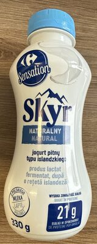
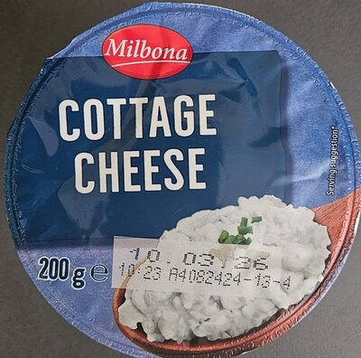
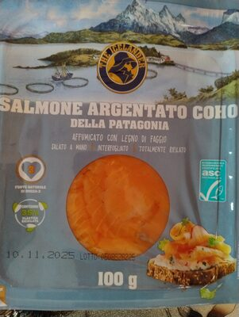
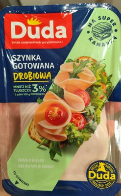
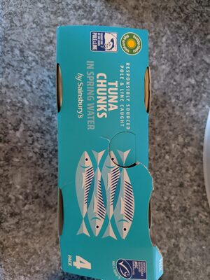
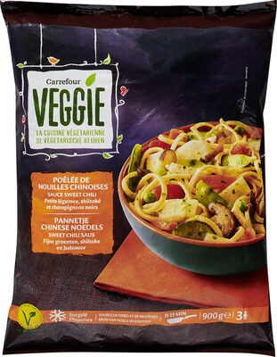

Najlepsze źródła białka w Carrefour
Classic, Sensation i porównanie marek pod makro
Carrefour (hiper i City) daje najwięcej marek obok siebie — łatwiej porównać etykiety skyru, wędlin i ryb. Marki własne Classic / Sensation bywają solidne, a lady (ryby, wędliny na wagę) pomagają kontrolować porcję.
Produkty warte uwagi

Carrefour Sensation Skyr pitny ok. 21 g białka/opakowanie (wariant pitny)
Cottage / serek Najniższy cukier na etykiecie
Łosoś wędzony Porcja 80–100 g, nie pół paczki
Szynka gotowana Często chudsza z lady
Tuńczyk W wodzie > w oleju Jaja
Stała pozycja w koszyku
Jaja
Stała pozycja w koszyku

Tofu Szersza półka vege Pierś z kurczaka
Porównaj cenę za kg z dyskontem
Pierś z kurczaka
Porównaj cenę za kg z dyskontem
Zdjęcia produktów: społeczność Open Food Facts (ODbL) oraz redakcja Proteiner — przykładowe opakowania z asortymentu; oferta zmienia się w czasie.
Jak wybierać w Carrefour
- Porównuj marki — Sensation vs Classic vs marki obce; wybierz najniższy cukier przy skyru i cottage.
- Łosoś wędzony — porcja 80–100 g, nie „pół paczki do kanapki”.
- Szynka z lady — często chudsza niż plastrowane wędliny śniadaniowe.
- Gotowe dania high-protein — ostrożnie z solą i olejem; lepiej złożyć posiłek z bazy.
Kiedy wybrać Carrefour zamiast dyskontu
- potrzebujesz konkretnej marki skyru / serka,
- chcesz rybę lub wędlinę krojoną na wagę,
- porównujesz 3–4 etykiety przed większym meal-prep.
Inne sieci i dalej
- Źródła białka w Biedronce
- Źródła białka w Lidlu
- Źródła białka w Auchan
- Przegląd 4 sieci
- Planowanie posiłków · Kalkulator
Na skróty: w Carrefour porównuj etykiety Sensation/Classic, bierz lady na wagę i nie przesadzaj z łososiem — resztę tygodnia domknij dyskontem.
Asortyment i ceny zmieniają się z gazetką. Poniżej typowe kategorie i marki własne, które regularnie wracają na półki. Makro pochodzi z bazy Proteiner (wartości na 100 g) — zawsze sprawdź etykietę konkretnego opakowania.